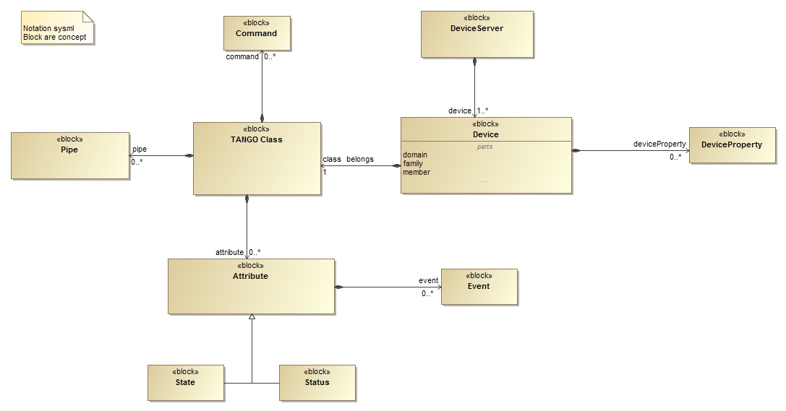

Simplified Tango Device Server Model¶
This document is directed to beginner developer.
Primary Presentation¶

Elements¶
| Block | Description |
|---|---|
| Device | Abstract concept defined by the TANGO device server object model; it can be a piece of hardware (an interlock bit) a collection of hardware (a screen attached to a stepper motor) a logical device (a taper) or a combination of all these (an accelerator). |
| TANGO Class | From Object Oriented Programming concept, this is the main class that the developer has to implement |
| DeviceServer | The server (also referred as device server) is a process whose main task is to offer one or more services to one or more clients. To do this, the server has to spend most of its time in a wait loop waiting for clients to connect to it. The devices are hosted in the server process. A server is able to host several classes of devices. In short, it is a process that export devices available to accept requests). Please refer also to the Glossary, Device Server instance. |
| DeviceProperty | Device specific configuration |
| Attribute | See Glossary, Attribute. |
| Pipe | See Glossary, Pipe. |
| Event | Refer to Events. |
| Command | See Glossary. |
| State | The device state is a number which reflects the availability of the device. Refer to Events |
| Status | The state of the device as a formatted ascii string |
Attributes¶
| Block | Attribute | Description |
|---|---|---|
| Device | domain/family/member | To identify the device |
Relations¶
| Left Block | Right Block | Multiplicity | Description |
|---|---|---|---|
| Device | TANGO Class | 1 | Every device belongs to a Tango class |
| Attribute | Event | 0..* | An attribute can have more than one event associated |
| Device | DeviceProperty | 0..* | A device can have more than one Device Property associated |
| DeviceServer | Device | 1..* | Every Device server has many devices inside itself |
| TANGO Class | Attribute | 0..* | A TANGO Class can have more than one Attribute associated |
| TANGO Class | Command | 0..* | A TANGO Class can have more than one Command associated |
| TANGO Class | Pipe | 0..* | A TANGO Class can have more than one Pipe associated |